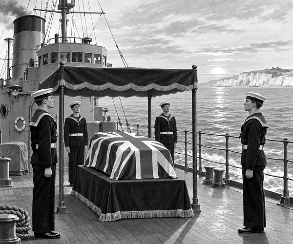

World War One ended in 1918.
Families waited for loved ones who would never return.
Some had no grave they could visit.
One army chaplain wanted to help.
His name was David Railton.
During the war, he had seen a plain wooden cross in France.
It marked an unknown British serviceman.
Years later, David had an idea.
One unknown serviceman could be brought home.
He would stand for everyone who had died without a known grave.
The plan was accepted.
Several unidentified servicemen were brought from battlefields in France.
Each coffin was covered with a Union Flag.
One was chosen at random.
Nobody knew his name, rank or unit.
He became the Unknown Warrior.
History fact: The choice was kept completely unknown. The Warrior could represent any missing serviceman from British forces in World War One.
On 10 November 1920, the coffin reached Boulogne harbour.
British and French guards stood beside it.
Sailors carried it aboard a Royal Navy destroyer.
The ship was HMS Verdun.
Its crew stood quietly as the ship crossed the English Channel.
The white cliffs of Dover came into view.
The Unknown Warrior was home.
A special train carried the coffin to London.
It reached Victoria Station that evening.
A military guard watched through the night.
The next morning was 11 November.
Six black horses waited outside.
They pulled a gun carriage through streets filled with people.
The crowd became still.
At Whitehall, King George V unveiled the Cenotaph.
Big Ben marked eleven o’clock.
Everyone kept a two-minute silence.
Then the carriage moved on to Westminster Abbey.
The Unknown Warrior was laid to rest among kings.
Many families felt that he might be their own missing son, husband or brother.
Abbey fact: The grave is covered by black marble and edged with red poppies. It is the one grave in the Abbey floor that people never walk upon.
More than a name had come home that day.
A whole country had been given a place to remember.